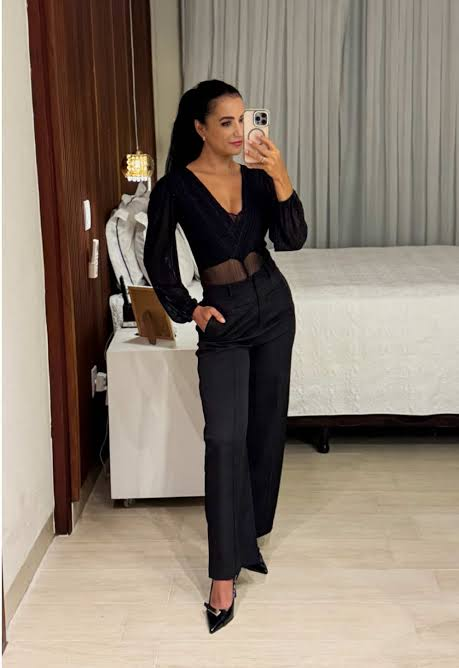

vou postar fotos minhas
Posts de Fotos e Dicas
Os posts de fotos podem ser usados para compartilhar ideias, inspirações e dicas de forma visual e criativa. É possível criar conteúdos com sugestões de poses, lugares para fotografar, combinações de cores, iluminação e diferentes formas de deixar as fotos mais bonitas. Além disso, os posts podem trazer dicas simples de edição, enquadramento e composição, ajudando outras pessoas a melhorar suas fotografias. A ideia é criar conteúdos interessantes.
